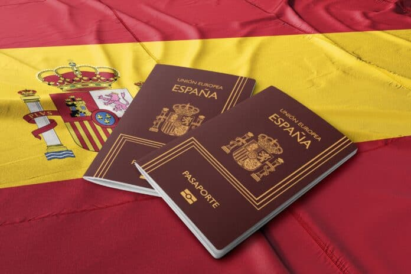

-
NACIONALIDAD POR RESIDENCIA

Este tipo de nacionalidad, se exige la residencia de la persona en España durante diez años de forma legal, continuada e inmediatamente anterior a la petición. Existen otras modalidades con respecto al periodo de residencia exigido la cual puede recudir estos años:
- Cinco años: para aquellas personas que hayan obtenido la condición de refugiado.
- Dos años: para los nacionales de países iberoamericanos, Andorra, Filipinas, Guinea Ecuatorial, Portugal, Francia o personas de origen sefardí.
-
Sólo será necesario un año para:
- El que haya nacido en territorio español.
- El que no ejerció debidamente su derecho a adquirir la nacionalidad española por opción.
- El que haya estado sujeto legalmente a la tutela, guarda o acogimiento de un ciudadano o institución españoles durante dos años consecutivos, incluso si continúa en esta situación en el momento de la solicitud.
- El que, en el momento de la solicitud, lleve un año casado con un español o española y no esté separado legalmente o de hecho.
- El viudo o viuda de española o español, si en el momento de la muerte del cónyuge no estaban separados legalmente o de hecho.
- El nacido fuera de España de padre o madre, abuelo o abuela, que originariamente hubieran sido españoles.
Además, el interesado deberá acreditar buena conducta cívica, y suficiente grado de integración en la sociedad española.
-
NACIONALIDAD POR CARTA DE NATURALEZA
- Es una modalidad que permite solicitar la nacionalidad española por vía excepcional. Este recurso está regulado por el artículo 21 del Código Civil español: “La nacionalidad española se adquiere por carta de naturaleza, otorgada discrecionalmente mediante Real Decreto, cuando en el interesado concurran circunstancias excepcionales”
- Cualquier extranjero puede solicitar la nacionalidad española por esta vía, pero deberá documentar las circunstancias excepcionales que se considere que pueden ser tomadas en cuenta para que esta le sea otorgada.
- Un ejemplo descriptivo de nacionalidad por carta de naturaleza es la que se otorga a personas deportistas que van a participar o han participado en competiciones internacionales representando a España.
-
NACIONALIDAD PARA ESPAÑOLES DE ORIGEN
Este tipo de nacionalidad española es, como su nómbrelo indica, la obtenida por aquellas personas que son españolas de origen. Según el Artículo 17 (y siguientes) del Código Civil español, serán españoles de origen:
- Las personas nacidas de padre o madre españoles.
- Las personas nacidas en España de padres extranjeros cuando, al menos uno de ellos, haya nacido también en el país. Para este supuesto, se exceptúan los hijos de funcionarios diplomáticos o consulares extranjeros acreditados en España.
- Las personas nacidas en España de padres extranjeros cuando ambos carezcan de nacionalidad (apátridas) o si la legislación de ninguno de ellos atribuye al hijo una nacionalidad.
- Los niños o niñas nacidos en España de cuyos padres se desconozca la identidad. Se considerarán españoles de origen los menores cuyo primer lugar de estancia conocido sea territorio español. En este caso, se incluyen por ejemplo, huérfanos o niños que han sido abandonados.
- Las personas menores de 18 años que sean adoptados por un español. No obstante, en el caso de que los adoptados sean mayores de edad, podrán optar también a la nacionalidad española por origen en un plazo, no mayor a 2 años, a partir de la formalización de la adopción.
- Las personas nacidas en el extranjero que hayan obtenido la nacionalidad española por la Ley de Memoria Histórica. Con esta ley (Ley 52/2007) se intentó reconocer y ampliar los derechos de quienes padecieron persecución o violencia durante la Guerra Civil española y la Dictadura.
Por tanto, independientemente del lugar de nacimiento, podríamos decir que tienes la ciudadanía española de origen siempre que exista algún tipo de vínculo de paternidad o maternidad con España.
-
NACIONALIDAD POR POSESION DE ESTADO

Tendrá derecho a la Nacionalidad Española aquella Persona que haya poseído y utilizado esta Nacionalidad durante diez años, de forma continuada, de buena fe (sin que tenga conocimiento de la situación real, es decir, de que no es Español en realidad), en base a un Título inscrito en el Registro Civil.
-
NACIONALIDAD POR OPCION
Entre los distintos mecanismos que regula nuestro derecho español actual para la adquisición de la nacionalidad, encontramos el de adquisición de nacionalidad se encuentra regulada en el artículo 20.2 del Código Civil, así como la Instrucción de 25 de octubre de 2022, de la Dirección General de Seguridad Jurídica y Fe Pública, sobre el derecho de opción a la nacionalidad española establecido en la disposición adicional octava de la Ley 20/2022, de 19 de octubre, de Memoria Democrática.
Hablamos de adquirir la nacionalidad española por opción cuando se nos da la posibilidad de conseguirla debido a nuestra relación con determinadas personas (progenitores, adoptantes o tutores) que son españolas o ya han adquirido previamente dicha nacionalidad.
Podrán acceder a la nacionalidad española por opción en las siguientes circunstancias:
- Las personas que estén o hayan estado sujetos a la patria potestad de un español.
- Aquellas personas cuyo padre o madre hubiera sido originariamente español y nacido en España. En este caso, no existe límite de edad.
- Aquellas personas cuya determinación de la filiación (es decir, cuando se determine quiénes son los padres) o nacimiento en España se produzca después de los dieciocho años de edad. En este supuesto, el plazo para optar a la nacionalidad es de dos años desde que se determina la filiación o el nacimiento.
- Aquellas personas cuya adopción por españoles se produzca después de los dieciocho años de edad. En este caso el derecho a optar existe hasta que transcurra el plazo de dos años a partir de la constitución de la adopción.
La solicitud de nacionalidad española por opción se puede promover por diferentes agentes:
- En el caso de menores de catorce años o incapacitados, se realizará por su representante legal. Hará falta la correspondiente autorización del encargado del Registro Civil del domicilio del declarante, previo dictamen del Ministerio Fiscal. Todo ello en interés del menor o incapaz.
- En el caso de mayores de catorce años o, que siendo incapaz así lo permita la sentencia de incapacitación, por el propio interesado, asistido por su representante legal.
- Si es mayor de dieciocho años o está emancipado, por sí solo.
- La posibilidad de opción caducará a los veinte años de edad, pero si, según su Ley personal, no estuviera emancipado a los dieciocho años, el plazo se prolongará hasta que transcurran dos años desde la emancipación.